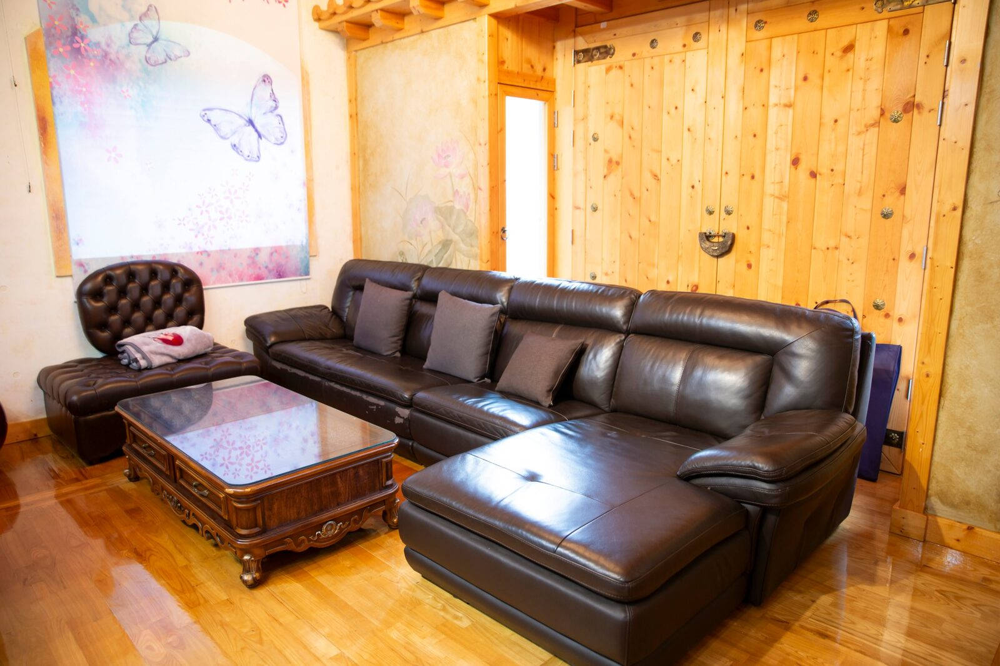
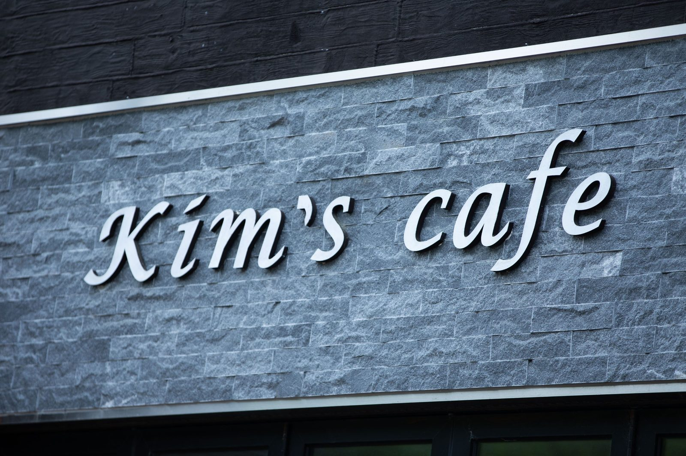
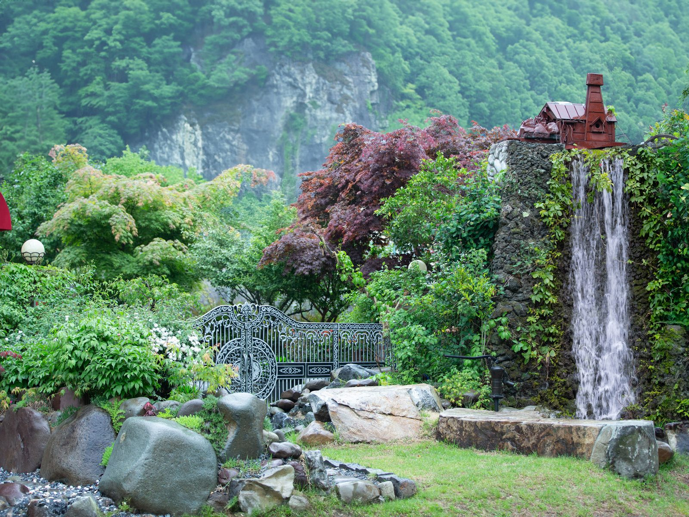
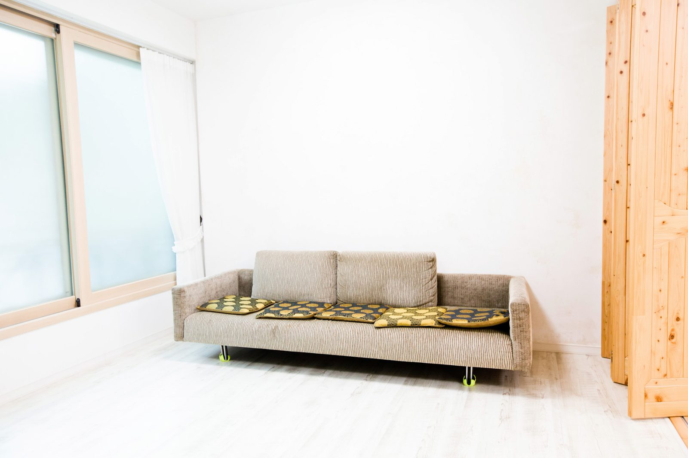
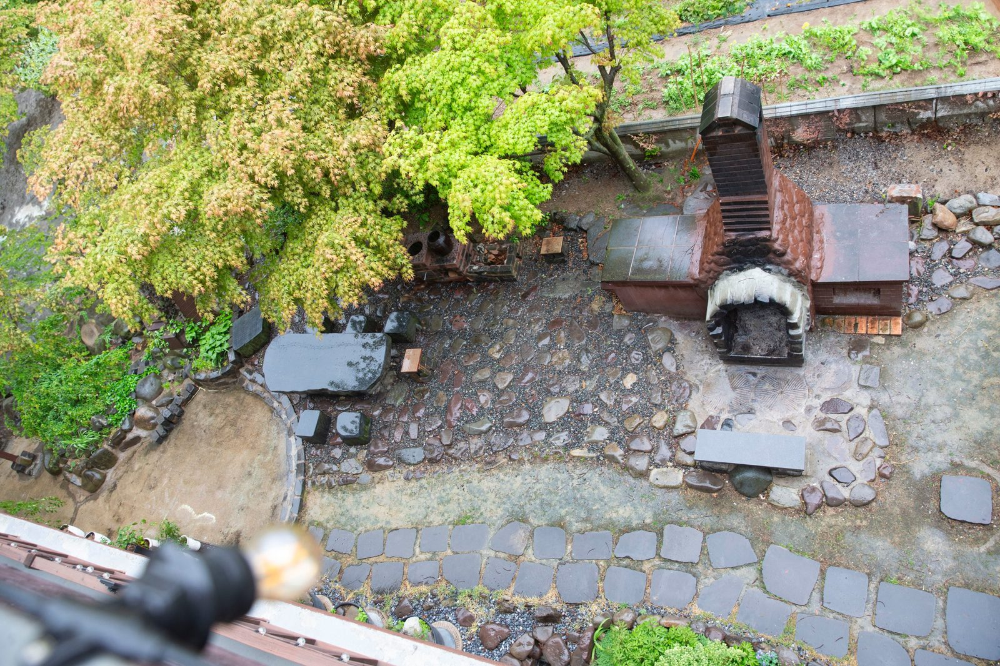
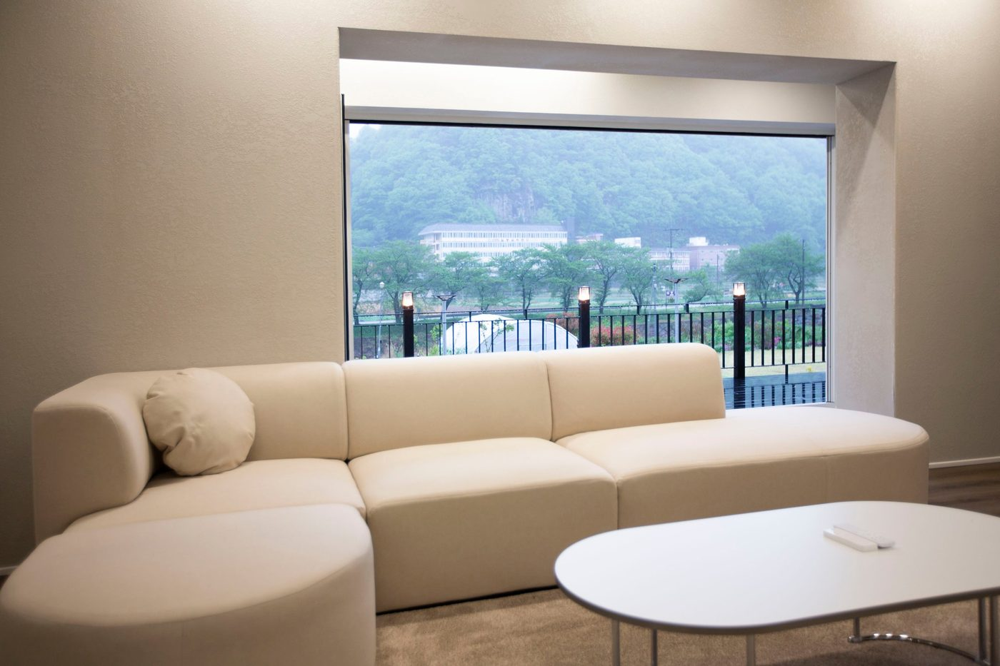

창원 사진관에서 서른일곱 해 — 제가 배운 건 사진이 아니라 기다림이었습니다
2026-10-17 발행
안녕하세요, 사랑이야기 스튜디오 창원점 김작가입니다.

서른일곱 해 동안 카메라를 들고 있었습니다. 그 시간을 돌아보면, 처음에는 잘 찍는 법을 배우려고 애를 썼습니다. 빛을 어떻게 잡을지, 표정을 어떻게 살릴지, 구도를 어떻게 잡을지. 그런데 세월이 지나고 나니 정작 제가 배운 것은 다른 것이었습니다. 사람을 기다리는 일이었습니다.
사진은 재촉해서 나오지 않습니다. 어머니가 웃음을 터뜨리는 순간은 준비한 대로 오지 않고, 아버지가 자식의 어깨에 손을 올리는 순간은 시키지 않아도 어느새 옵니다. 그래서 저는 카메라를 들고 한 걸음 물러서 있습니다. 그 한 걸음이 서른일곱 해 동안 제가 가장 잘한 일인 것 같습니다.
창원 상남동 롯데빌딩 2층에 있는 저희 창원점은, 오시는 분들이 “여기가 사진관이에요?” 하고 한 번 더 물어보시는 곳입니다. 입구를 들어서면 따뜻한 아메리카노 한 잔이 먼저 반깁니다. 김스카페라고 부르는 작은 공간인데, 촬영을 기다리시는 동안이나 촬영이 끝나신 뒤에 앉아 계시라고 만든 자리입니다. 급하게 오실 필요가 없다는 뜻이기도 합니다.

조금만 걸어 나가면 정원이 있습니다. 폭포 소리가 들리고, 계절마다 나무 빛이 달라지는 곳입니다. 이 정원을 만든 이유도 단순합니다. 사진 한 장을 위해 억지로 웃는 얼굴보다, 바람을 쐬다가 자연스럽게 웃는 얼굴이 훨씬 오래 남기 때문입니다. 실내 촬영룸은 일부러 비워 두었습니다. 벽 하나, 창 하나, 소파 하나. 그 단출한 방 안에서 가족의 표정만 남습니다.


의령에는 조금 다른 공간이 있습니다. 의령사진관과 함께, 1,000평 부지에 김작가사진이야기펜션을 독채로 운영하고 있습니다. 멀리서 오시는 가족이 하루를 서두르지 않고 머물다 가시라고 만든 곳입니다. 아침에 일어나 마당을 걷고, 아이들은 뛰어놀고, 어르신은 의자에 앉아 계시다가 자연스럽게 카메라 앞에 서십니다. 촬영이 끝나면 바베큐를 함께 나누는 날도 있습니다.


서른일곱 해 동안 참 많은 가족을 만났습니다. 이제는 그 가족의 자녀가 커서 다시 오고, 그 자녀가 다시 부모님이 되어 옵니다. 사진관이라는 곳이 참 이상한 곳입니다. 한 번 오신 분이 십 년 뒤에 다시 오시고, 그 사이의 세월이 사진 안에 차곡차곡 쌓입니다.
혹시 가족사진을 미루고 계신다면, 한 가지만 말씀드리고 싶습니다. 잘 나와야 한다는 부담은 내려놓으셔도 됩니다. 저는 잘 찍는 것보다 오래 남는 것을 더 중요하게 생각하는 사람입니다. 준비가 안 되셨어도 괜찮습니다. 오시면 제가 옆에서 천천히 안내해 드리겠습니다.
자주 묻는 질문
Q. 창원에서 칠순 가족사진은 언제 예약하는 게 좋을까요?
A. 생신 날짜가 정해지면 한두 달 전에 미리 말씀해 주시는 것이 좋습니다. 부모님이 편한 시간대와 옷 준비까지 함께 맞출 수 있습니다.
Q. 부모님이 사진 찍는 것을 어색해하시는데 괜찮을까요?
A. 괜찮습니다. 촬영 전 김스카페에서 따뜻한 아메리카노 한 잔으로 긴장을 푸시고, 준비가 되면 천천히 시작합니다.
Q. 멀리서 가는데 하루에 다 할 수 있을까요?
A. 의령점은 1,000평 부지에 독채 펜션을 함께 운영하고 있어, 오시는 길이 먼 가족은 하루를 여유 있게 쓰실 수 있습니다.
오시는 곳
사랑이야기창원점
- 주소 경남 창원시 성산구 원이대로 652, 상남동 롯데빌딩 2층
- 전화 055-287-8022
- 영업시간 오전 10:00 ~ 오후 7:00
- 예약 전화 상담 · 카카오톡 채널
- 주차 건물 지하 주차장
김작가사진이야기 의령
- 주소 경남 의령군 궁류면 청정로 1188
- 전화 055-574-3706
- 영업시간 오전 10:00 ~ 오후 7:00
- 예약 전화 상담 · 카카오톡 채널
- 주차 전용 주차장
이 글에 한마디
댓글창을 준비하고 있습니다. 그동안 궁금한 점은 카카오채널로 남겨 주시면 바로 답변드립니다.
카카오채널로 한마디 남기기